2. 功能
刀具按照设置的主轴速度和进给率钻孔，直到输入的最后的钻孔深度。到达最后钻孔深度时允许停顿时间。
3. 操作顺序
循环执行前已到达位置：
钻孔位置是所选平面的两个坐标轴中的位置。
循环形成以下的运行顺序：
使用G0回到安全高度
按循环调用前所设置的进给率（G1）移动到最后的钻孔深度。
在最后钻孔深度处的停顿时间。
使用G0退回到返回平面。
4. 参数说明

| 802D-T固定循环 |
CYCLE82中心钻孔 |
1. 编程
CYCLE82（RTP，RFP，SDIS，DP，DPR，DTB）
RTP |
Real |
返回平面（绝对坐标） |
RFP |
Real |
参考平面（绝对坐标） |
SDIS |
Real |
安全高度（无正负号输入） |
DP |
Real |
最后钻孔深度（绝对坐标） |
DPR |
Real |
相对参考平面的最后钻孔深度（无正负号输入） |
DTB |
Real |
到达最后钻孔深度时的停顿时间（断屑） |
2. 功能
刀具按照设置的主轴速度和进给率钻孔，直到输入的最后的钻孔深度。到达最后钻孔深度时允许停顿时间。
3. 操作顺序
循环执行前已到达位置：
钻孔位置是所选平面的两个坐标轴中的位置。
循环形成以下的运行顺序：
使用G0回到安全高度
按循环调用前所设置的进给率（G1）移动到最后的钻孔深度。
在最后钻孔深度处的停顿时间。
使用G0退回到返回平面。
4. 参数说明
RFP和RTP（参考平面和返回平面）
通常，参数平面（RFP）和返回平面（RTP）具有不同的值。在循环中，返回平面高于参考平面。这说明从返回平面到最后钻孔深度的距离大于参考平面到最后钻孔深度间的距离。
SDIS（安全高度）
安全高度为相对参考平面刀具的抬刀安全距离，其方向由循环自动确定。
DP和DPR（最后钻孔深度）
最后钻孔深度可以定义成参考平面的绝对值或相对值，如果是相对值定义，循环会采用参考平面和返回平面的位置自动计算相应的深度。
DTP（停止时间）
DIP设置了到达最后钻孔深度的停顿时间（断削），单位为秒。
5. 编程举例
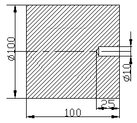
G00 G90 X0 Z50 M03 S300；主轴转速
T1 D1 F0.5；刀具号码
CYCLE82 (50, 0, 2, -25, 25, 1) ；调用钻孔循环,离工件表面2MM处进给,
G0 Z50到达深度后停止1秒
G00 X100 Z100
M2
CYCLE83深孔钻削 |
1. 编程
CYCLE83（RTP，RFP，SDIS，DP，DPR，FDEP，FDPR，DAM，DTB，DTS，FRF，VARI）
RTP |
Real |
返回平面（绝对坐标） |
RFP |
Real |
参考平面（绝对坐标） |
SDIS |
Real |
安全高度（无符号输入） |
DP |
Real |
最后钻孔深度（绝对坐标） |
DPR |
Real |
相对参考平面的最后钻孔深度（无符号输入） |
FDEP |
Real |
第一次钻孔深度（绝对坐标） |
FDPR |
Real |
相对参考平面的第一次钻孔深度（无符号输入） |
DAM |
Real |
每次切削量（无符号输入） |
DTB |
Real |
到达最后钻孔深度时的停顿时间（断屑） |
DTS |
Real |
到第一次钻孔深度和用于排屑的停顿时间 |
FRF |
Real |
第一次钻孔深度的进给率系数：范围0.001…1 |
VARI |
Int |
加工类型：断屑=0排屑=1 |
2. 功能
刀具以设置的主轴速度和进给率开始钻孔，直至定义的最后钻孔深度。深孔钻削是通过多次执行最大可定义的切削量，直至到达最后钻孔深度来实现的。钻头可以在每次进给深度完以后回到参考平面+安全高度用于排屑，或者每次退回1mm用于断屑。
3. 操作顺序
循环启动前到达位置：
钻孔位置在所选平面的两个进给轴中。
循环形成以下动作顺序：
深孔钻削排屑时（VARI=1）
使用G0回到由参考平面+安全高度。
使用G1移动到第一次钻孔深度，进给率为程序设定进给率×参数FRF。
在最后钻孔深度处停顿时间（参数DTB）。
使用G0返回到参考平面+安全高度，用于排屑。
起始点停顿时间（参数DTS）。
使用G0回到上次到达的钻孔深度，并保持预留量距离。
使用G1钻削到下一个钻孔深度（持续动作顺序直至到达最后钻孔深度）。
使用G0退回到返回平面。
深孔钻削断削屑时（VARI=0）：
用G0返回到参考平面+安全高度。
用G1钻孔到第一次钻孔深度，进给率为程序指定进给率×参数FRF。
最后钻孔深度停顿时间（参数DTP）。
使用G1从当前钻孔深度后退1mm（用于断屑），采用调用程序中的设置的进给率。
用G1按所设置的进给率执行下一次钻孔切削（该过程一直进行下去，直至到达最终钻削深度）。
用G0退回到返回平面。
4. 参数说明
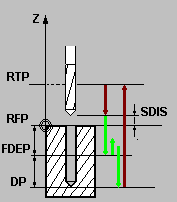
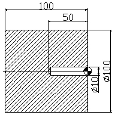
CYCLE84刚性攻丝 |
1. 编程
CYCLE84（RTP，RFP，SDIS，DP，DPR，DTB，SDAC，PIT，MPIT，SPOS，SST，SST1）
| RTP | Real |
返回平面（绝对坐标） |
RFP |
Real |
参考平面（绝对坐标） |
SDIS |
Real |
安全高度（无符号输入） |
DP |
Real |
最后钻孔深度（绝对坐标） |
DPR |
Real |
相对参考平面的最后钻孔深度（无符号输入） |
DTB |
Real |
停顿时间（断屑） |
SDAC |
Int |
循环结束后的旋转方向值：3，4，或5（用于M3，M4和M5） |
MPIT |
Real |
螺距由螺纹尺寸决定（有符号）数值范围3（用于M3）…48（用于M48）；符号决定了在螺纹中的旋转方向 |
PIT |
Real |
螺纹由数值决定（有符号）数值范围：0.001…2000，000mm； 符号决定了在螺纹中的旋转方向 |
SPOS |
Real |
循环中定位主轴的位置（以度为单位） |
SST |
Real |
攻丝速度 |
SST1 |
Real |
退回速度 |
2. 功能
刀具以设置的主轴转速和进给率进行攻丝直至定义的最终螺纹深度。CYCLE84 可以用于刚性攻丝。
注意：只有主轴在技术上进行位置控制，才可以使用CYCLE84。对于带补偿夹具的攻丝，需要一个另外的循环CYCLE840。
3. 操作顺序
循环启动前到达位置：
钻孔位置在所选平面的两个进给轴中。
循环形成以下动作顺序：
使用G0回到参考平面加安全高度处。
定位主轴停止（停止角度在参数SPOS中）以及将主轴转换为进给轴模式。
攻丝至最终钻孔深度，速度为SST。
停留时间（参数DTB）。
退回到参考平面加安全高度处，速度为SST1且方向相反。
使用G0退回到返回平面；通过在循环调用前重新设置有效的主轴速度以及SDAC下设置的旋转方向 ，从而改变主轴模式。
4. 参数说明
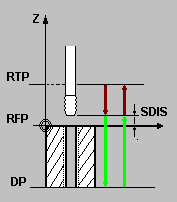
负值→LH（用于M4）
如果两个螺纹螺距参数的值有冲突，循环将产生报警61001“螺纹螺距错误”且循环终止。
SPOS（主轴角度）
攻丝前，使用命令SPOS使主轴在设定角度准确停止并转换成位置控制。
SST（速度）
参数SST包含了用于攻丝程序的主轴速度。
SST1（退回速度）
在SST1下使用G332设置了主轴攻完丝退回的速度。如果该参数的值为零，则按照SST下设置的速度退回。
5. 编程举例
刚性攻丝 在位置X0处进行刚性攻丝，钻孔轴是Z轴。未设置停止时间；设置的深度值为相对值。必须给旋转方向参数和螺距参数赋值。被加工螺纹公称直径为M5。
N10 G0 G90 G54 T6 D1 ；技术值的定义
N20 D1 X0 Z40 ；接近钻孔位置
N30 CYCLE84（4，0，2，30，5，90，200，500）
；循环调用，已忽略PIT参数；未给绝对深度或停顿时间输入数值
主轴在90度位置；攻丝速度是200，退回速度是500MM/MIN
N40 M2 ；程序结束
| CYCLE85 铰孔 |
1. 编程
CYCLE85（RTP，RFP，SDIS，DP，DPR，DTB，FFR，RFF）
| RTP | Real |
返回平面（绝对坐标） |
RFP |
Real |
参考平面（绝对坐标） |
SDIS |
Real |
安全高度（无符号输入） |
DP |
Real |
最后钻孔深度（绝对坐标） |
DPR |
Real |
相对参考平面的最后钻孔深度（无符号输入） |
DTB |
Real |
最后铰孔深度时停顿时间（断屑） |
FFR |
Real |
进给率 |
RFF |
Real |
退回进给率 |
2. 功能
刀具按设置的主轴速度和进给率铰孔，直至到达最后钻孔深度。切削和退刀的进给率分别是参数FFR和RFF的值。
3. 操作顺序
循环启动前到达位置：
钻孔位置在所选平面的两个进给轴中。
循环形成以下动作顺序：
使用G0回到参考平面加安全高度处。
使用G1切削至最终深度，进给率按参数FFR所设置
最后铰孔深度时停顿时间。
使用G1返回到参考平面加安全高度处，进给率是参数FFR所设置值。
使用G0退回到返回平面。
4. 参数说明
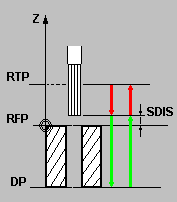
| CYCLE86 镗孔 |
1. 编程
CYCLE86（RTP，RFP，SDIS，DP，DRP，DTB，SDIR，RPA，RPO，RPAP，SPOS）
| RTP | Real |
返回平面（绝对值） |
RFP |
Real |
参考平面（绝对值） |
SDIS |
Real |
安全高度（无符号输入） |
DP |
Real |
最后钻孔深度（绝对值） |
DRP |
Real |
相对参考平面的最后钻孔深度（无符号输入） |
DTB |
Real |
最后钻孔深度时停顿时间（断屑） |
SDIR |
Int |
旋转方向值：3（用于M3）4（用于M4） |
RPA |
Real |
平面中第一轴上的返回路径（增量，带符号输入） |
RPO |
Real |
平面中第二轴上的返回路径（增量，带符号输入） |
RPAP |
Real |
镗孔轴上的返回路径（增量，带符号输入） |
SPOS |
Real |
主轴定位停止角度（以度为单位） |
2. 功能
此循环可以使用镗刀进行镗孔。刀具按照设置的主轴转速和进给率进行镗孔，直至达到最后镗孔深度。镗孔时，一旦到达镗孔深度，便激活了定位主轴停止功能。然后，主轴从返回平面快速回到设置的返回位置。
3. 操作顺序
循环启动前的到达的位置：
钻孔位置在所选平面的两个进给轴中。
循环形成以下动作顺序：
使用G0回到参考平面加安全高度处。
循环调用前使用G1及所设置的进给率镗到最终钻孔深度处。
最后钻孔深度处停顿时间。
主轴定位停止在SPOS参数设置的角度。
使用G0在三个方向上返回。
使用G0在镗孔轴方向返回到参考平面加安全高度处。
使用G0在退回到返回平面（平面的两个轴方向上的初始钻孔位置）。
4. 参数说明

说明：
对于参数RTP，RFP，SDIS，DP，DPR，参见CYCLE82
DTB（停顿时间）
DTB设置到最后镗孔深度时的停顿时间（断屑）。单位为秒
SDIR（旋转方向）
使用此参数，可以定义循环中进行镗孔时的旋转方向。如果参数的值不是3或4（M3/M4），则产生报警61102“未编程主轴方向”且不执行循环。
RPA（第一轴上的返回路径）
使用此参数定义在第一轴上（横坐标）的返回路径，当到达最后镗孔深度并执行主轴定位停止功能后执行此返回路径。
RPO（第二轴上的返回路径）
使用此参数定义在第二轴上（纵坐标）的返回路径，当到达最后钻孔深度并执行主轴定位停止功能后执行此返回路径。
RPAP（镗孔轴上的返回路径）
使用此参数定义在镗孔轴上的返回路径，当到达最后钻孔深度并执行主轴定位停止功能后执行此返回路径。
SPOS（主轴位置）
使用SPOS设置主轴定位停止的角度，单位为度，该功能在到达最后镗孔深度后执行
注意： 主轴在技术上能够进行旋转角度控制，则可以使用CYCLE86。
5. 编程举例
镗孔调用CYCLE86。编程的最后钻孔深度值为绝对值。在最后钻孔深度处的停顿时间是2秒。工件的上沿在Z110处。在此循环中，主轴以M3旋转并停在45度位置。
N10 G0 F0.5 S300 M3 ；技术值的定义
N20 T1 D1 Z50 ；回到返回平面
N30 X0 Z50 ；回到镗孔位置
N40 CYCLE86（50， 0，2，-30，30，2，3，-1，-1，1，45） ；使用镗孔循环
N50 M2 ；程序结束
| CYCLE88 带停止镗孔 |
1. 编程
CYCLE88（RTP，RFP，SDIS，DP，DRP，DTB，SDIR）
RTP |
Real |
返回平面（绝对值） |
RFP |
Real |
参考平面（绝对值） |
SDIS |
Real |
安全高度（无符号输入） |
DP |
Real |
最后钻孔深度（绝对值） |
DRP |
Real |
相对参考平面的最后钻孔深度（无符号输入） |
DTB |
Real |
最后钻孔深度时停顿时间（断屑） |
SDIR |
Int |
旋转方向值：3（用于M3）4（用于M4） |
2. 功能
刀具按照设置的主轴转速和进给率进行镗孔，直至达到最后镗孔深度。带停止镗孔时，到达最后镗孔深度时会产生主轴无方向M5停止和已设置的停止。按CYCLE START键在快速移动时持续退回动作直到返回平面。
3. 操作顺序
循环启动前的到达的位置：
钻孔位置在所选平面的两个进给轴中。
循环形成以下动作顺序：
使用G0回到参考平面加安全高度处。
使用循环调用前G1设置的进给率移到最终镗孔深度处。
到镗孔深度时停顿时间。
使用G1 返回到参考平面加安全距离处，进给率是由参数RFF设定。
使用G0在退回到返回平面。
4. 参数说明
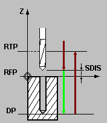
| CYCLE93 切槽 |
1. 编程
CYCLE93（SPD，DPL，WIDG，DIAG，STAG1，ANG1，ANG2，RCO1，RCO2，RCI1，RCI2，FAL1，FAL2，IDEP，DIB，VARI）
| SPD | Real |
横向坐标轴起始点 |
DPL |
Real |
纵向坐标轴起始点 |
WIDG |
Real |
切槽宽度（无符号输入） |
DIAG |
Real |
切槽深度（无符号输入） |
STAG1 |
Real |
轮廓和纵向轴之间的角度 |
ANG1 |
Real |
侧面角1：在切槽一边，由起始点决定 |
ANG2 |
Real |
侧面角2：在另一边 |
RCO1 |
Real |
半径/倒角1，外部：位于由起始点决定的一边 |
RCO2 |
Real |
半径/倒角2，外部 |
RCI1 |
Real |
半径/倒角1，内部：位于起始点侧 |
RCI2 |
Real |
半径/倒角2，内部 |
FAL1 |
Real |
槽底的精加工余量 |
FAL2 |
Real |
侧面的精加工余量 |
IDEP |
Real |
进给深度（无符号输入） |
DIB |
Real |
槽底停顿时间 |
VARI |
Int |
加工类型范围值：1…8和11…18 |
2. 功能
切槽循环可以用于纵向和表面加工时对任何垂直轮廓单元进行对称和不对称的切槽。可以进行外部和内部的切槽。
3. 操作顺序
进给深度（面向槽底）和宽度（从槽到槽）在循环内部计算并分配给相同的最大允许值。在倾斜表面切槽时，刀具将以最短的距离从一个槽移动到下一个槽。在此过程中，循环内部计算出到轮廓的安全距离。
步骤1：
每次进给后刀具会退回以便断屑。
步骤2：
垂直于进给方向按一步或几步加工槽，而每一步依次按进给深度来划分。从沿槽向内的第二次切削开始，退刀前刀具将退回1mm。
步骤3：
如果在ANG1或ANG2下设置了角度值，只进行一次侧面的毛坯切削。如果槽宽较大，则分几步沿槽宽进行进给。
步骤4：
从槽沿到槽中心平行于轮廓进行精加工余量的毛坯切削。在此过程中，循环可以自动选择或不选择刀具半径补偿。
4. 参数说明
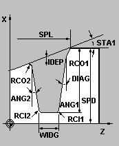
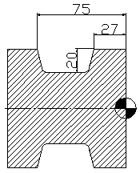
| CYCLE94 退刀槽形状E..F |
1. 编程
CYCLE94（SPD，SPL，FORM）
| SPD | Real |
横向轴的起始点（无符号输入） |
SPL |
Real |
纵向轴刀具补偿的起始点（无符号输入） |
FORM |
Char |
设定形状：E（用于形状E） F（用于形状F） |
2. 功能
使用此循环，可以按DIN509进行形状为E和F的退刀槽切削，并要求成品直径大于3mm。
3. 操作顺序
循环启动前到达位置：
起始位置可以是任意位置，但须保证回该位置开始加工时不发生刀具碰撞。
该循环具有如下时序过程：
用G0 回到循环内部所计算的起始点。
根据当前的刀尖位置选择刀尖半径补偿，并按循环调用之前所设置的进给率进行退刀槽的加工。
用G0回到起始点，并用G40 指令取消刀尖半径补偿。
4. 参数说明
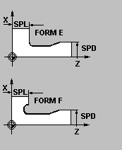
| CYCLE95 毛坯切削 |
1.编程
CYCLE95(NPP，MID，FALZ，FALX，FAL，FF1，FF2，FF3，VARI，DT，DAM，_VRT)
| NPP | String |
轮廓子程序名称 |
MID |
Rcal |
进给深度(无符号输入) |
FALZ |
Rcal |
在纵向轴的精加工余量(无符号输入) |
FALX |
Rcal |
在横向轴的精加工余量(无符号输入) |
FAL |
Rcal |
轮廓的精加工余量 |
FF1 |
Rcal |
非切槽加工的进给率 |
FF2 |
Rcal |
切槽时的进给率 |
FF3 |
Rcal |
精加工的进给率 |
VARI |
Rcal |
加工类型 范围值：1…12 |
DT |
Rcal |
粗加工时用于断屑时的停顿时间 |
DAM |
Rcal |
粗加工因断屑而中断时所经过的长度 |
_VRT |
Rcal |
粗加工时从轮廓的退回行程，增量(无符号输入) |
2.功能
使用粗车削循环，可以进行轮廓切削。该轮廓已编程在子程序中。轮廓可以包括凹凸切削。使用纵向和表面加工可以进行外部和内部轮廓的加工。工艺可以随意选择(粗加工、精加工、综合加工)。粗加工轮廓时，按最大的编程进给深度进行切削且到达轮廓的交点后清除平行于轮廓的毛刺，进行粗加工直到编程的精加工余量。
在粗加工的同一方向进行精加工。刀具半径补偿可以由循环自动选择或不选择。
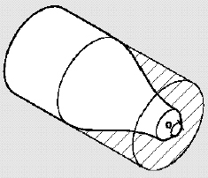
| CYCLE97 螺纹切削 |
1. 编程
CYCLE97（PIT，MPIT，SPL，FPL，DM1，DM2，APP，ROP，TDEP，FAL，IANG，NSP，NRC，NID，VARI，NUMT）
| PIT | Real |
螺距 |
MPIT |
Real |
螺纹尺寸值：3（用于M3）…60（用于M60） |
SPL |
Real |
螺纹终点，位于横向轴上 |
FPL |
Real |
螺纹终点，位于纵向轴上 |
DM1 |
Real |
起始点的螺纹直径 |
DM2 |
Real |
终点的螺纹直径 |
APP |
Real |
空刀导入量（无符号输入） |
ROP |
Real |
空刀退出量（无符号输入） |
TDEP |
Real |
螺纹深度（无符号输入） |
FAL |
Real |
精加工余量（无符号输入） |
IANG |
Real |
进给切入角：“+”或 “-” |
NSP |
Real |
首圈螺纹的起始点偏移（无符号输入） |
NRC |
Int |
粗加工切削量（无符号输入） |
NID |
Int |
停顿次数 |
VARI |
Int |
定义螺纹的加工类型：1…4 |
NUMT |
Int |
螺纹头数（无符号输入） |
2. 功能
使用螺纹切削循环可以获得在纵向和表面加工中具有恒螺距的圆形和锥形的内外螺纹。螺纹可以是单头螺纹和多头螺纹。多头螺纹加工，每个螺纹依次加工。
自动执行进给时可在每次恒进给量切削或恒切削截面积进给中选择。右手或左手螺纹是主轴的旋转方向决定的，该方向必须在循环执行前设置好。车螺纹时，进给率和主轴转速调整都不起作用。
重要信息：为了可以使用此循环，需要使用带有位置控制的主轴。
3. 操作顺序
循环启动前到达的位置：
任意位置，但必须保证刀尖可以没有碰撞地回到所设置的螺纹起始点+导入空刀量。
该循环有如下的时序过程：
用G0 回第一头螺纹导入空刀量起始点
按照参数VARI定义的加工类型进行粗加工进刀。
根据编程的粗切削次数重复螺纹切削。
用G33切削精加工余量。
根据停顿次数重复此操作。
对于其它的螺纹重复整个过程。
4. 参数说明
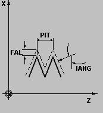
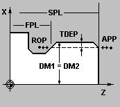
PIT和MPIT（螺距和螺纹尺寸）
要获得公制的圆柱螺纹，也可以通过参数MPIT（M03到M60）设置螺纹尺寸。只能选择使用其中一种参数。如果参数冲突，循环将产生报警61001“螺距无效”且中断。
DM1和DM2（直径）
使用此参数来定义螺纹起始点和终点的螺纹直径。如果是内螺纹，则是孔的直径。
SPL，FPL，APP和ROP的相互联系（起始点，终点，空刀导入量，空刀退出量）
编程的起始点（SPL）和（FPL）为螺纹最初的起始点。但是，循环中使用的起始点是由空刀导入量APP产生的起始点。而终点是由空刀退出量ROP返回的编程终点。在横向轴中，循环定义的起始点始终比设置的螺纹直径大1mm。此返回平面在系统内部自动产生。
TDEP，FAL，NRC和NID的互相联系（螺纹深度，精加工余量，切削量，停顿次数）
粗加工量为螺纹深度TDEP减去精加工余量，循环将根据参数VARI自动计算各个进给深度。当螺纹深度分成具有切削截面积的进给量时，切削力在整个粗加工时将保持不变。在这种情况下，将使用不同的进给深度值来切削。
第二个变量是将整个螺纹深度分配成恒定的进给深度。这时，每次的切削截面积越来越大，但由于螺纹深度值较小，则形成较好的切削条件。完成第一步中的粗加工以后，将取消精加工余量FAL，然后执行NID参数下设置的停顿路径。
IANG（切入角）
如果要以合适的角度进行螺纹切削，此参数的值必须设为零。如果要沿侧面切削，此参数的绝对值必须设为刀具侧面倒角的一半。
进给的执行是通过参数的符号定义的。如果是正值，进给始终在同一侧面执行，如果是负值，在两个侧面分别执行。在两侧交替的切削类型只适用于圆螺纹。如果用于锥形螺纹的IANG值虽然是负，但是循环只沿一个侧面切削。
NSP(起始点偏移)和NUMT（头数）
用NSP参数可设置角度值用来定义待切削部件的螺纹圈的起始点，这称为起始点偏移，范围从0到+359.9999之间。如果未定义起始点偏移或该参数未出现在参数列表中，螺纹起始点则自动在零度标号处。
使用参数NUMT可以定义多头螺纹的头数。对于单头螺纹，此参数值必须为零或在参数列表中不出现。螺纹在待加工部件上平均分布；第一圈螺纹由参数NSP定义。如果要加工一个具有不对称螺纹的多头螺纹，在编程起点偏移时必须调用每个螺纹的循环。
VARL（加工类型）
使用参
| 值 | 外部/内部 |
恒定进给/恒定切削截面积 |
1 |
A |
恒定进给 |
2 |
I |
恒定进给 |
3 |
A |
恒定切削截面积 |
4 |
I |
恒定切削截面积 |
数VARL可以定义是否执行外部或内部加工，及对于粗加工时的进给采取任何加工类型。VARI参数可以有1到4的值，它们的定义如下：
5. 编程举例
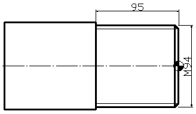